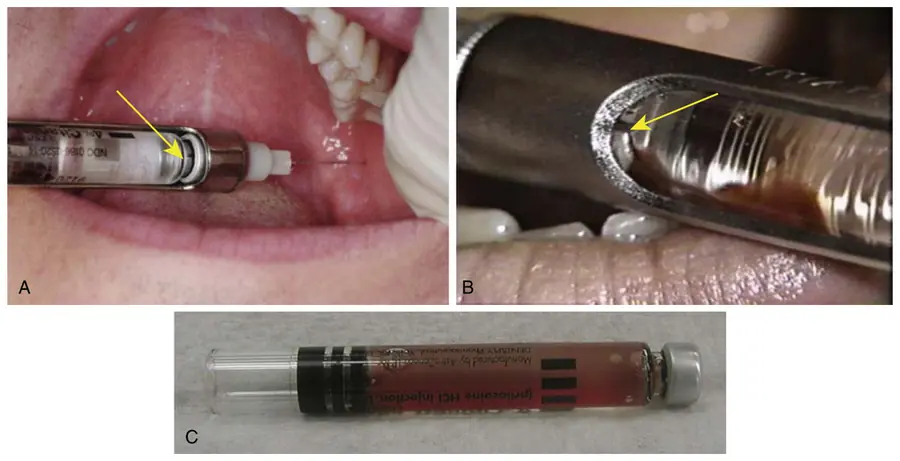

نسخه استخراجشده؛ ترجمه یا تأیید علمی انجام نشده است. وضعیت: captured
خانمی مضطرب برای بلاک عصب آلوئولار تحتانی (IANB) روی یونیت است و با هر حسی از جا میپرد. سوزن باید ۲۰ تا ۲۵ میلیمتر در بافت جلو برود. در این مسیر چه میکنی و درست پیش از رسیدن به استخوان چه؟
پریوست عصبدهی غنی دارد و برخورد سوزن با آن دردناک است. در بلاکهایی که سوزن به پریوست میرسد، درست پیش از تماس چند قطره بریز: IANB، گاو-گیتس و بلاک ASA (اینفرااوربیتال). با تمرین، حس لامسهات تغییر تراکم بافت نزدیک استخوان را تشخیص میدهد.
برای بیمار حساس یا بافت حساس، محلول بافرشده که pH آن به بدن نزدیک است، ورود سوزن را راحتتر میکند؛ محلول کارپول دارای تنگکننده اسیدی است.
رنگ قرمز کمرنگ کنار دیافراگم معمولاً یعنی ورید: سوزن را جابهجا کن و دوباره آسپیره کن. خون قرمز روشنی که کارپول را سریع پر میکند معمولاً یعنی شریان: سرنگ را بیرون بیاور، کارپول را عوض کن و از نو شروع کن. جایی که خطر آسپیراسیون مثبت بالاست، سوزن گیج ۲۵ آسپیراسیون مطمئنتری میدهد.

سرعت ایدهآل ۱ میلیلیتر در دقیقه است و هدف واقعبینانه، یک کارپول ۱٫۸ میلیلیتری در دستکم ۶۰ ثانیه. تزریق تند درد لحظهای و کوفتگی چندروزه میآورد و در تزریق داخل رگ، واکنش شدید. تزریق آهسته IANB را زودتر و مؤثرتر هم میکند.
نکتهی طلایی: یکچهارم حجم را بریز، دوباره آسپیره کن و همین را تکرار کن. اگر آسپیراسیون مثبت شد، فقط ۹ میلیگرم از محلول ۲٪ وارد رگ شده است. تزریق آهسته در پیشگیری از عارضهی تزریق داخل رگ حتی از آسپیراسیون مهمتر است.